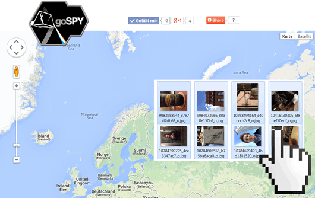

Drag & drop one or more photos from your computer onto the map!

Do you know how much information is stored in a picture you take with your smartphone? Take a picture and drag it on the map and we will show you the meta information for that picture.